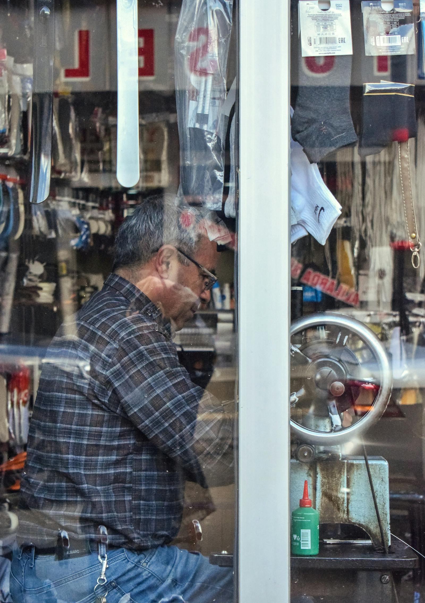
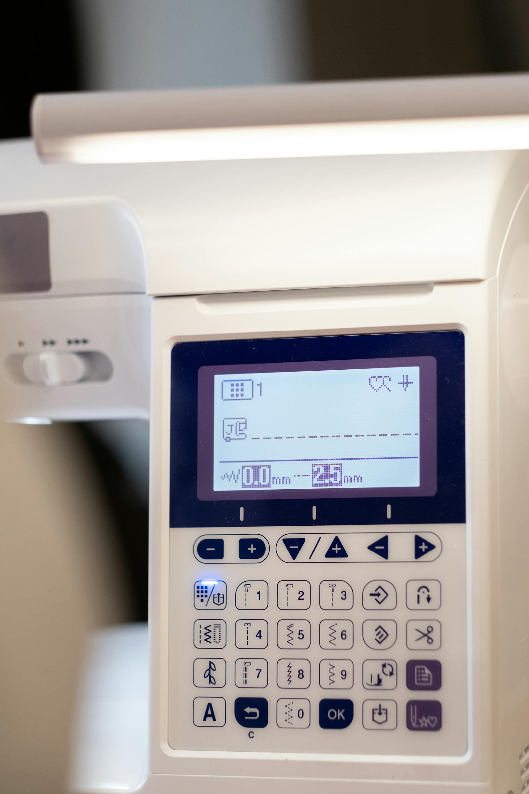
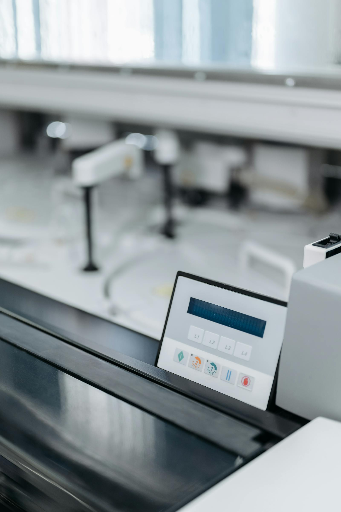
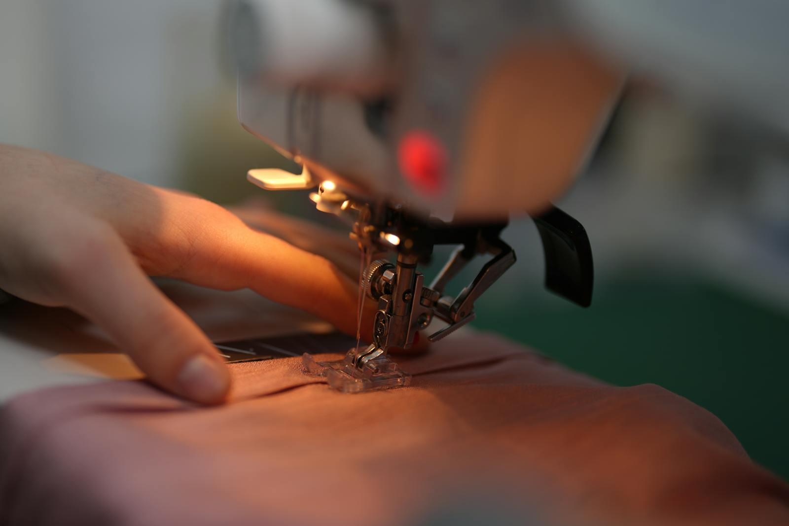
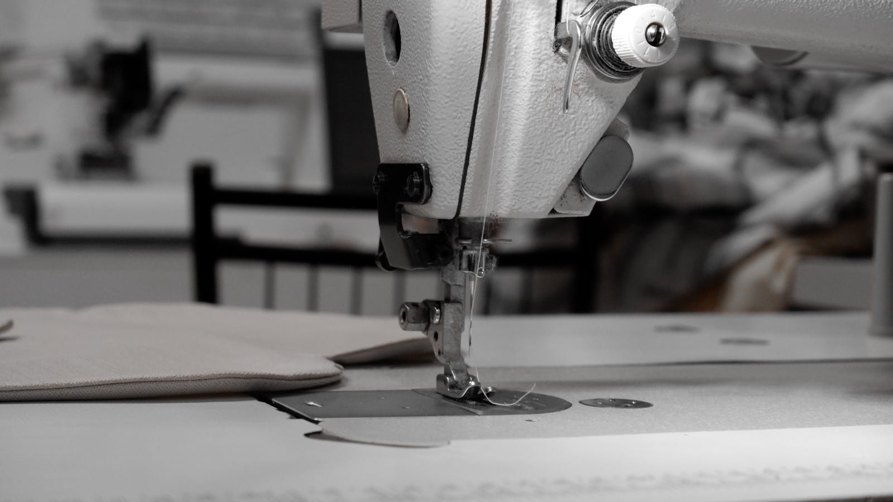

Bernina & Bernette Sales
Premium machine guidance with a focus on quality, fit, and long-term value.
Bernina and Bernette specialists in Pretoria
Bernina Moot is a premium sewing destination for product sales, embroidery support, technical servicing, classes, spare parts, accessories, and practical help for both domestic and industrial sewing.
Premium machine guidance with a focus on quality, fit, and long-term value.
Reliable technical support that keeps machines performing beautifully.
Essential parts and accessories for a more complete sewing setup.
Warm, premium learning experiences for beginners and growing creatives.
Welcome to Bernina Moot
Bernina Moot serves Pretoria with a thoughtful mix of premium machine sales, technical care, spare parts, accessories, sewing education, and support for both domestic and industrial customers.

Core Services
Bernina Moot combines product knowledge, practical servicing, and creative support in one polished customer experience.
Premium Bernina and Bernette product guidance for home, quilting, embroidery, and business use.
View productsTechnical care for domestic and industrial machines, including broader make and model support.
View supportWelcoming classes, machine guidance, embroidery support, and skill-building sessions for makers.
View classesClear guidance around service quotes, machine selection, and what to expect before booking.
View pricesMachine Categories
Choose from curated categories designed for creative growth, performance, and dependable sewing results.

Reliable, precise machines for everyday sewing and elevated craftsmanship.

Finish garments with confidence, speed, and a more polished result.

Creative support for precise quilting, detail work, and smooth handling.

Add decorative detail and personalized finishes with confidence.

Support for businesses that rely on consistency, durability, and performance.
Looking for the right fit?
Whether you are upgrading, starting out, choosing embroidery features, or buying for business use, Bernina Moot can guide you with care.
Browse productsProducts, Learning & Community
From beginner sewing classes to embroidery support, creative guidance, and warm community moments, Bernina Moot supports both skill and connection.
Explore products
Technical Support
We assist with servicing, diagnostics, embroidery guidance, and repairs on any make and model, including industrial support.
Learn moreHours
Monday to Thursday 08:00 - 17:00, Friday 08:00 - 15:00, Saturday 08:00 - 12:00.
Plan your visitContact
Call, WhatsApp, or visit us in Villieria, Pretoria for expert help with sales, service, and classes.
Contact Bernina Moot